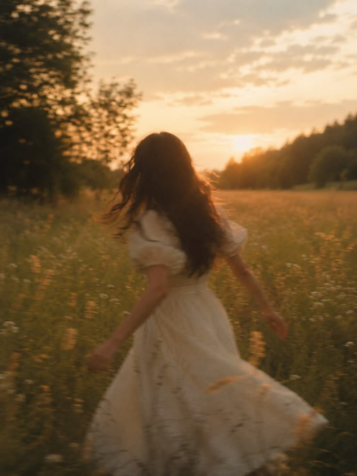
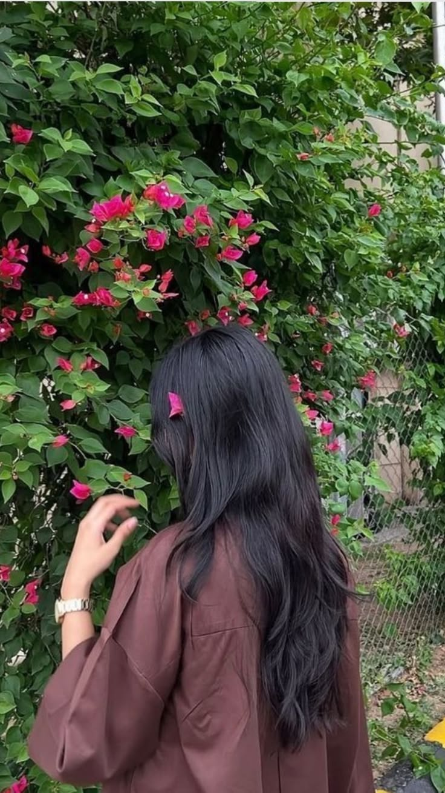

A little universe · made for one person
Your story.
In 3D.
Eight photographs, two little films and two songs — brought together as an interactive memory universe.
ENTER THE MEMORIES ↓Eight photographs, two little films and two songs — brought together as an interactive memory universe.
ENTER THE MEMORIES ↓Eight frames. One story. Hover over them and watch the memories lift from the page.




Two little films, placed inside the same 3D world.
Some feelings sound better than they read.
Track 01 · Your soundtrack
Track 02 · Play this one slowly
Because one day, these ordinary moments become the ones you never want to forget.
BACK TO THE BEGINNING ↑